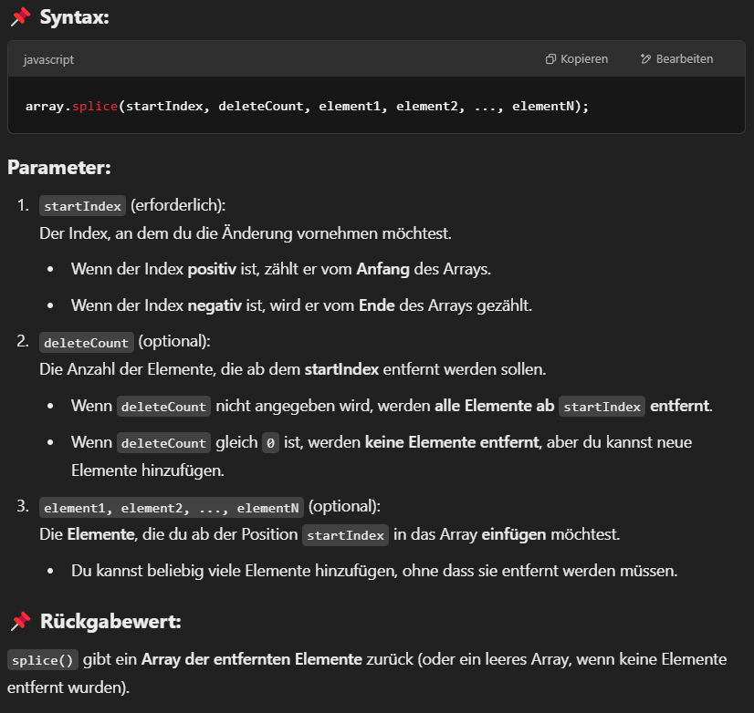
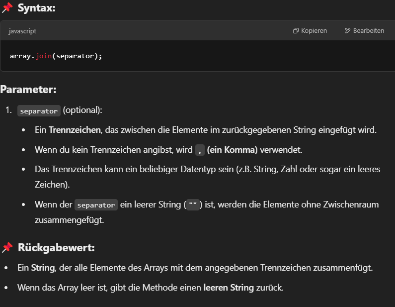
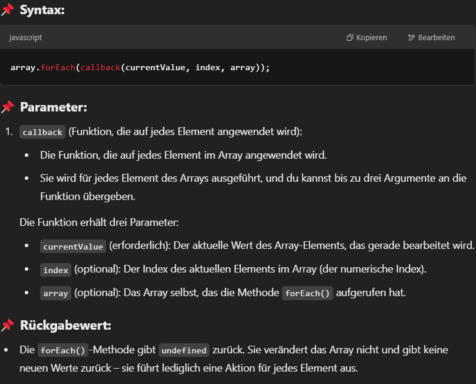

Arrays
Ein Array in JavaScript ist eine spezielle Art von Objekt, das eine geordnete Liste von Elementen speichert.
Diese Elemente können beliebige Datentypen sein, einschließlich Zahlen, Strings, Objekte oder sogar andere Arrays.
Array erstellen mit eckigen Klammern [ ]
In JavaScript kannst du eine Array-Variable am einfachsten mit eckigen Klammern [ ] erstellen. Diese Methode ist kurz, verständlich und flexibel.
ArrayTest = [1, 2, 3, 4, 5, 6, 7, 8, 9, 10].length
console.log(ArrayTest);
Wird der obenstehende Array mit .length combiniert so wird der Wert: 10 zurückgegeben.
Da der Array die Anzahl der Elemente zurück gibt.
arr = [5];
console.log(arr);
Erstellt ein Array mit einem einzigen Element: 5.
console.log(arr); Gibt den gesamten Inhalt des Arrays aus.
Die at()-Methode
Die Methode .at() ermöglicht den Zugriff auf ein bestimmtes Element eines Arrays über seinen Index.
Der Unterschied zu arr[index] ist, dass .at() auch negative Indizes unterstützt.
Die push()-Methode
Die Methode push() ist eine eingebaute Methode in JavaScript, die ein oder mehrere Elemente ans Ende eines Arrays hinzufügt.
Sie verändert das ursprüngliche Array und gibt die neue Länge des Arrays zurück.
Die pop()-Methode
Die Methode pop() ist eine eingebaute Methode in JavaScript, die das letzte Element eines Arrays entfernt und dieses Element zurückgibt.
Sie verändert das ursprüngliche Array und reduziert seine Länge um eins.
Die shift()-Methode
Die Methode shift() in JavaScript entfernt das erste Element eines Arrays und gibt dieses Element zurück.
Dadurch wird die Länge des Arrays um eins reduziert. Sie verändert direkt das Array.
Die splice()-Methode
Die Methode splice() in JavaScript ist eine sehr mächtige Funktion, die es dir ermöglicht, Elemente aus einem Array zu entfernen, zu ersetzen oder hinzuzufügen.
Mit splice() kannst du an jeder beliebigen Stelle im Array einfügen oder entfernen, was sie zu einer der flexibelsten Array-Methoden macht.

concat()-Methode
Die Methode concat() in JavaScript wird verwendet, um Arrays zusammenzuführen.
Sie kombiniert zwei oder mehr Arrays (oder auch andere Werte wie Werte, Strings oder Objekte) und gibt ein neues Array zurück, ohne das ursprüngliche Array zu verändern.
indexOf()
Die Methode indexOf() in JavaScript wird verwendet, um den ersten Index eines bestimmten Elements in einem Array zu finden. Wenn das Element im Array vorhanden ist,
gibt die Methode den Index des ersten Vorkommens zurück. Wenn das Element nicht im Array gefunden wird, gibt sie -1 zurück.
lastIndexOf
Die Methode lastIndexOf() in JavaScript funktioniert ähnlich wie indexOf(), aber statt den Index des ersten Vorkommens eines Elements im Array zu finden,
gibt lastIndexOf() den letzten Index des gesuchten Elements im Array zurück. Wenn das Element nicht im Array gefunden wird, gibt sie -1 zurück.

Die includes()-Methode
Die includes()-Methode in JavaScript wird verwendet, um zu überprüfen, ob ein Array ein bestimmtes Element enthält. Sie gibt true zurück,
wenn das Element im Array vorhanden ist, und false, wenn es nicht enthalten ist.
join()
Die join()-Methode in JavaScript wird verwendet, um alle Elemente eines Arrays in einen einzelnen String zu verbinden. Du kannst dabei ein Trennzeichen angeben,
das zwischen den Array-Elementen eingefügt wird. Wenn kein Trennzeichen angegeben wird, werden die Elemente durch ein Komma (,) getrennt.

forEach()-Methode
Die forEach()-Methode in JavaScript ist eine Methode, die auf Arrays angewendet wird. Sie führt eine angegebene Funktion einmal für jedes Element im Array aus,
ohne ein Ergebnis zurückzugeben. Sie ist besonders nützlich, um alle Elemente eines Arrays zu durchlaufen und mit ihnen zu arbeiten, ohne dabei explizit eine Schleife zu schreiben.

map()-Methode
Die map()-Methode wird verwendet, um ein neues Array zu erstellen, indem sie eine Funktion auf jedes Element eines bestehenden Arrays anwendet.
Im Gegensatz zu forEach(), das nichts zurückgibt, erzeugt map() ein neues Array mit den transformierten Werten.
filter()-Methode
Die filter()-Methode wird verwendet, um ein neues Array zu erstellen, das nur die Elemente enthält, die eine bestimmte Bedingung erfüllen.
Im Gegensatz zu map() verändert filter() die Werte nicht, sondern wählt bestimmte Werte aus.
sort()-Methoode
Die sort()-Methode in JavaScript wird verwendet, um die Elemente eines Arrays alphabetisch oder numerisch zu sortieren.
Sie ändert das Original-Array und gibt das sortierte Array zurück.